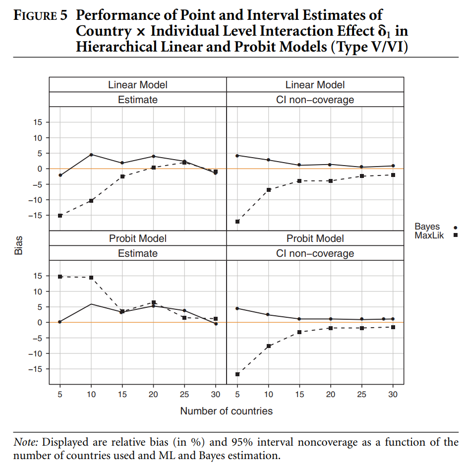

收录于合集
文献来源： Daniel Stegmueller. “How Many Countries for Multilevel Modeling? A Comparison of Frequentist and Bayesian Approaches”. American Journal of Political Science , Vol. 57, No. 3(July 2013), pp. 748–761.
作者简介： Daniel Stegmueller，杜克大学政治学系副教授，研究方向为政治经济学、政治行为和比较研究中的贝叶斯模型和稳健推断方法。
编译者按： 政观在不久前曾推送过该作者的一篇经典文献，有兴趣的读者请参见：方法论衡 | Daniel Stegmueller：跨文化比较研究中的可比性问题。政观近期还将推出基于本文方法的讨论合辑，敬请期待。如果在编译中出现失误，我们欢迎各位师友不吝指教。
引言
在政治学研究，特别是跨国比较研究中，对于微观和宏观数据的整合可以算作比较前沿的技术，因此，相应的计量模型——多层模型（multilevel model，也作hierarchical model）也发展迅速。这一模型将宏观数据和微观数据相匹配，以估计来自微观层次和宏观层次变量的因果效应。多层模型的应用范围非常广泛，而在比较政治学研究中，多层模型一般被用来分析国家- 个人的嵌套数据。但是个中问题在于，国家层次的样本量往往很少，而最大似然估计（MLE）是通过渐近的方式来估计效应量的，所以当样本量较少时，估计的标准误会偏小，给那些依赖显著性的研究员呈现出虚假的显著结果。但是在既有的研究中，学界对高层的样本量，也即国家的数量应该有多少尚未达成共识（从8-100不等）。为此，作者在这篇文章中分析了频率学派和贝叶斯学派在处理相关模型上的一些差异，并提出了相关解决方案（编译者注：关于分层模型的基本原理文章没有详细叙述，市面上有很多关于这一模型的专著，如Gelman and Hill, 2007等）。
**** 分层模型简介
如表1所示，多层模型常用的类别是I和II所表示的随机截距模型（random intercept model），关注于不同国家的个体间系统差异。将此类模型进行扩展，引入国家层面的变量，就成为III和IV所描述的模型，以体现国家层次解释变量的因果效应。更为复杂的模型则是考虑不同国家特征对个体层次变量的因果效应的影响，这就是V和VI描述的跨层交互模型。
多层模型：频率学派 vs 贝叶斯学派
在政治学研究中，以抽样理论为基础的学者认为，如果群组也是以大样本抽样为基础的话，那么多层模型就是适用的。但是如亚洲民主动态调查（Asian Barometer Survey），拉丁美洲晴雨表调查（Latino Barometer）等调查数据，显然并非通过抽样来选择国家样本，而是带有很强的区域性；此外，由于一些中层理论（middle-range theories）的适用性问题，在所有国家中进行抽样往往并不可取。所以这抽样理论的观点是值得斟酌的。
极大似然估计法会得到两个结果，一是均值估计量，二是估计标准误。频率学派的置信区间（Confidence Intervals）就是根据这两个估计量计算得出。而贝叶斯学派的可信区间（Credible Intervals）是参数可用的完整后验概率分布的对应分位数，也即贝叶斯学派对于后验概率的估计并不依赖于国家的数量。当然，贝叶斯学派总是需要考虑先验分布，并结合数据的似然函数来得到完整后验分布。很多学者倾向于使用无信息先验分布（noninformative priors）以保证最小的主观影响，故作者采用同样的策略：
1. 线性模型参数的残差（一层方差）服从倒Gamma分布，形状与尺度参数设定为0.001；
2. 随机效应的先验分布及其共轭分布均服从倒Gamma分布，两个参数设定为很小的值，例如0.001；或像Gelman(2006)提出的标准差服从均匀分布；
3. 在包括随机系数的模型中，方差系数矩阵的先验分布服从倒Wishart分布，自由度比方差-协方差矩阵的维度高1。
实验设计
作者使用蒙特卡罗（Monte Carlo）方法对比较研究的常用数据进行模拟，考察模型的效应估计和个体与国家层次变量的不确定性。作者做了如下设计：
1. 国家的数量从5到30个，每隔5个为一组，共6组数量的国家，每个国家包括500名个体；
2. 三个组间相关值（Intraclass correlation values），分别为0.05，0.10和0.15；
3. 估计方法：极大似然估计和吉布斯抽样（Gibbs Sampling），其中吉布斯抽样设定两种先验分布，并关注三个后验分布的统计量，即均值、中位数和众数。
上述方法一共划定了756种情况（663*（1+2*3）），作者生成了1000份数据集并计算不同的效应。其中极大似然估计法使用标准期望最大化算法（Standard EM Algorithm），吉布斯抽样方法使用两条4000次迭代的马尔科夫链来计算后验均值、中位数和众数作为点估计。作者关注于蒙特卡罗模拟的两个核心结果：一是估计的偏误；二是置信区间的未覆盖区(noncoverage)。估计的偏误通过下列公式得出：
而区间估计通过对这些置信区间的覆盖率进行平均，减去名义95%区间覆盖水平，再乘100，即可得到用百分比数表示的未覆盖水平。由于考虑到版面因素，作者在结果中略去了相似的结果，重点考虑不同策略对相关模型在个体和国家层次上协方差效应之间的差别。
宏观变量的分层模型
首先考察残差与随机效应。作者发现，在6种模型中，频率派方法和贝叶斯方法对个体层次残差的估计结果均表现良好，但是两种方法对随机效应方差的估计却不尽人意，都出现了较大的估计偏差。
在对95%区间覆盖率水平的估计上，贝叶斯方法非常有效地避免了因国家数量过少而带来的影响，而极大似然估计即使是在30个国家样本的那一组数据中表现也并不出色。
个体层次与国家层次的协变量往往是研究者的理论关注点。图1表示个体层次的线性模型和probit模型在点估计和区间覆盖率水平上的结果。该图的意思为，对于个体层次的估计上，国家数量的影响并不是很大，两种估计方法差距也并不大，个体层次变量的估计结果是比较稳健的。
图2反映了宏观变量的估计结果，该图明显地反映出频率派方法和贝叶斯方法在估计上的差异。无论国家数量是多少，贝叶斯估计总能保持在5%以内的误差，而频率派方法的估计在国家数量较少时偏差极大。故同等情况之下，贝叶斯估计要显著优于频率派方法估计。
包含随机效应的模型
这一部分所讨论的随机效应包括三个主要参数：国家层次变量的效应、个体层次协变量的平均效应以及对作用于个体层次协变量的国家层次变量效应（跨层交互效应）。
如图3所示，对于国家层次变量来说，当国家数量较小时，贝叶斯方法与频率派方法的估计都有较大偏差，但是当国家数量增加时，两种估计方法都变得优良。但是整体来看贝叶斯方法的表现要比频率派方法的表现更优。
图4展示了个体层次协变量的平均效应估计，图中显示，两种方法在点估计上表现类似，而在区间覆盖率水平上，贝叶斯方法的表现更好。
而对于图5显示的跨层交互效应来说，当国家数量很少时，极大似然估计会造成近15%的估计偏差（线性模型和probit模型的效应恰好相反），而贝叶斯方法的点估计在相同情况下的偏误更小。而对于区间覆盖率水平来说，贝叶斯估计在假说检验上更为保守，而频率派方法的估计区间很小，因此会造成显著性检验的一些误导。

组间相关与对先验分布的讨论
前文的研究基于0.10的组间相关系数（ICC），而不同的估计方法在不同的组间相关系数中估计结果是相似的，当然，如果真考虑其中的区别，那就是ICC水平越高，两种估计方法的差别越大。图6展示了不同ICC水平下的模型VI的估计效应。图中显示，当国家数量较少时，两种估计方法都表现出较大偏差，而随着国家数量的增加，两种方法的估计结果越来越近似。
图7讨论了服从倒Gamma分布的先验和服从均匀分布的先验在模型估计上的比较。这一结果意味着，当国家数量较多的时候，先验分布所提供的信息并不会对估计结果造成很大影响；但是当国家数量较少时，研究者则需要比较不同的先验分布以使他们的模型更为稳健。
经验实证研究：对欧盟的支持
为在实际应用中对本文的方法进行检验，作者借鉴了Steenbergen and Jones(2002)的研究。这份研究认为，对于欧盟的支持受到个体、政党和国家特征的影响。故他们使用了三层线性模型（Type III）,将个体嵌套在政党与国家中。作者选择个体与国家层次的变量，使用欧洲晴雨表调查数据（Eurobarometer Survey）来进行研究。他发现，在个体层次变量的效应估计上，贝叶斯方法和频率派方法的结果是一致的，所以他重点考虑国家层次的变量。
Eichenberg and Dalton(1993)提出，当欧盟国家更加依赖彼此时，公民能够意识到共同市场的重要性，从而提升对欧盟的支持。针对这一假设，作者采用了Steenbergen and Jones(2002)的操作化方式，并增加了各国加入欧盟的年限以体现新成员国民众对欧盟的消极态度。此外，作者还增加了各国的人均GDP和通货膨胀率，并对所有的国家层次变量进行标准化处理。
图8是模型中国家层次变量的估计结果。显然，极大似然估计比贝叶斯估计得到了更小的估计区间。而对于那些关注贸易（trade）和通货膨胀（inflation）研究者来说，使用不同的估计方法则会得到截然相反的结论。
结论
很多比较研究关注宏观层次变量对微观层次变量的影响，也考虑其中存在的跨层交互效应，但是对于跨国比较分析来说，较少的国家数量往往会导致估计的偏差。对于使用极大似然估计的分层模型，如果国家数量在15-20个之间的话，作者建议他们应考虑90%置信区间，这比95%的置信区间要更加可信。
当然，贝叶斯估计在不同国家数量的模型中表现都比较好，尽管在一些模型中有较大的偏误，但是与极大似然估计方法相比，贝叶斯方法估计的结果更容易令人接受。而在跨层交互模型中，研究者需要更加谨慎，特别是当国家数量较少的时候，频率学派的置信区间估计可能会存在极大的偏差。因此作者建议，如果进行跨国比较研究，转向贝叶斯学派可能是一个更优的选择。
编译：刘天祥 审校：陆屹洲 编辑：康张城
【政文观止Poliview】系头条号签约作者